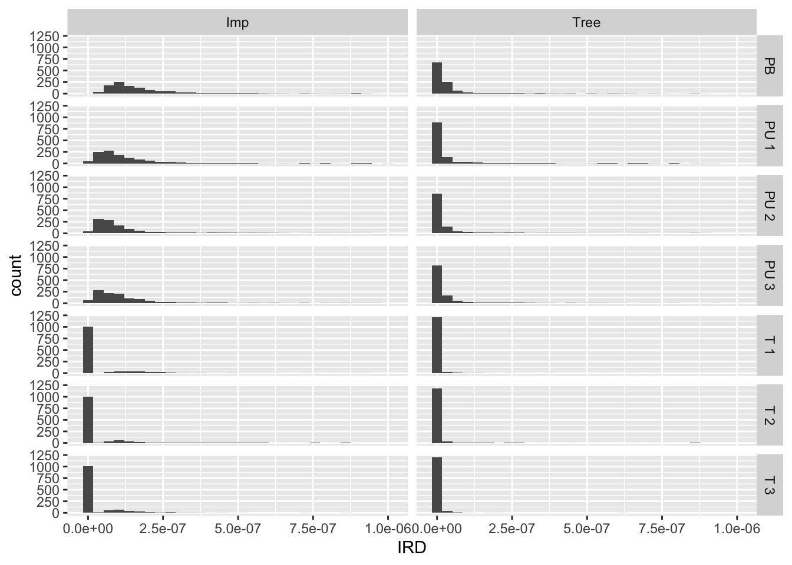

| scenario_intervention | scenario_type_7_abbrev | n_scenario |
|---|---|---|
| Imp | PB | 1260 |
| Imp | PU 1 | 1260 |
| Imp | PU 2 | 1260 |
| Imp | PU 3 | 1260 |
| Imp | T 1 | 1260 |
| Imp | T 2 | 1260 |
| Imp | T 3 | 1260 |
| Tree | PB | 1260 |
| Tree | PU 1 | 1260 |
| Tree | PU 2 | 1260 |
| Tree | PU 3 | 1260 |
| Tree | T 1 | 1260 |
| Tree | T 2 | 1260 |
| Tree | T 3 | 1260 |
Hospitalization scenarios
Scenario definitions
Tree canopy
Population-based Scenario: AI: Increase by 10% in all zip codes
Targeted
Scenario AII1: Increase by 10% in zip codes in the lowest 1/5th of current TC cover (i.e. <=20th pctile)
Scenario AII2: Increase by 10% in zip codes in the highest 1/5th of the Social Vulnerability Index (i.e. >80th pctile)
Scenario AII3: Increase by 10% in zip codes in the highest 1/5th of hospitalization burden (i.e. >80th pctile)
Proportionate-universalism
Scenario AIII1: Increase by 10% for bottom 1/5th of current TC cover… down to 2% for top 1/5th
Scenario AIII2: Increase by 10% for top 1/5th of SVI … down to 2% for bottom 1/5th
Scenario AIII3: Increase by 10% for top 1/5th of hospitalization burden … down to 2% for bottom 1/5th
Impervious surface cover
Population-based: Scenario BI: Decrease by 10% in all zip codes
Targeted
Scenario BII1: Decrease by 10% in zip codes in the highest 1/5th of current imperv cover (i.e. >80th pctile)
Scenario BII2: Decrease by 10% in zip codes in the highest 1/5th of the Social Vulnerability Index (i.e. >80th pctile)
Scenario BII3: Decrease by 10% in zip codes in the highest 1/5th of hospitalization burden (i.e. >80th pctile)
Proportionate-universalism
Scenario BIII1: Decrease by 10% for top 1/5th of current imperv cover … down to 2% for bottom 1/5th
Scenario BIII2: Decrease by 10% for top 1/5th of SVI … down to 2% for bottom 1/5th
Scenario BIII3: Decrease by 10% for top 1/5th of hospitalization burden … down to 2% for bottom 1/5th
Data check
Number of zip codes with scenarios by scenario type
Implausible or unusual data Are there zip codes with ratios above 2? This implies the counterfactual scenario has twice as many cases as baseline
| scenario_intervention | scenario_type_3 | scenario_sub_type | scenario_type_7_abbrev | n | n_scenario | prop |
|---|---|---|---|---|---|---|
| Imp | Population-based | NA | PB | 25 | 1260 | 0.0198 |
| Imp | Prop. Univ. | Exposure | PU 1 | 13 | 1260 | 0.0103 |
| Imp | Prop. Univ. | Hosp. burden | PU 3 | 10 | 1260 | 0.0079 |
| Imp | Prop. Univ. | SVI | PU 2 | 9 | 1260 | 0.0071 |
| Imp | Targeted | Exposure | T 1 | 7 | 1260 | 0.0056 |
| Imp | Targeted | SVI | T 2 | 3 | 1260 | 0.0024 |
| Tree | Population-based | NA | PB | 9 | 1260 | 0.0071 |
| Tree | Prop. Univ. | Exposure | PU 1 | 2 | 1260 | 0.0016 |
| Tree | Prop. Univ. | Hosp. burden | PU 3 | 4 | 1260 | 0.0032 |
| Tree | Prop. Univ. | SVI | PU 2 | 3 | 1260 | 0.0024 |
Ratios below zero? This implies the counterfactual scenario yields a negative number (negative predicted hospitalizations)
| scenario_intervention | scenario_type_3 | scenario_sub_type | scenario_type_7_abbrev | n | n_scenario | prop |
|---|---|---|---|---|---|---|
| Imp | Population-based | NA | PB | 20 | 1260 | 0.0159 |
| Imp | Prop. Univ. | Exposure | PU 1 | 15 | 1260 | 0.0119 |
| Imp | Prop. Univ. | Hosp. burden | PU 3 | 12 | 1260 | 0.0095 |
| Imp | Prop. Univ. | SVI | PU 2 | 9 | 1260 | 0.0071 |
| Imp | Targeted | Exposure | T 1 | 5 | 1260 | 0.0040 |
| Imp | Targeted | SVI | T 2 | 1 | 1260 | 0.0008 |
| Tree | Population-based | NA | PB | 5 | 1260 | 0.0040 |
| Tree | Prop. Univ. | Exposure | PU 1 | 3 | 1260 | 0.0024 |
| Tree | Prop. Univ. | Hosp. burden | PU 3 | 3 | 1260 | 0.0024 |
| Tree | Prop. Univ. | SVI | PU 2 | 3 | 1260 | 0.0024 |
Plots
Histograms of IRR, IRD, and diff in n cases
Facet by type of intervention (impervious surfaces vs tree canopy) and by scenario type - Population-based, Proportionate Universalism, Targeted

Bar charts
Median IRR

Median IRD